01 / PLATFORM ENGINEERING
FUN Box
96 independently developed tools across 13 project-specific categories, used daily by an estimated 26–50 colleagues across multiple U.S. offices.
96 tools13 categories · up to 90% reported reduction
Read case study From HEC-RAS hydraulic validation to raster interpolation and multi-office automation, these projects combine GIS, engineering, and practical Python development.
Detailed explanations of the challenge, solution, technical approach, and measurable impact.
96 independently developed tools across 13 project-specific categories, used daily by an estimated 26–50 colleagues across multiple U.S. offices.
Batch HEC-RAS screening with seven check categories, Excel reports, and shapefiles identifying potential hydraulic issues.
Custom distance-weighted cross-section interpolation produces water-surface rasters, flood-depth grids, and delineated polygons.
Spatial and attribute joins feed template-based FIS reporting, with database-derived outputs for QC and reconciliation.
Raster processing, machine learning, bathymetry, and GIS production tools.

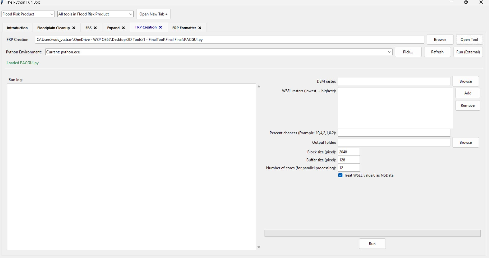
Developed an open-source Python tool to automate annual-chance and 30-year flood raster products using water-surface elevation grids and FEMA-provided formulas.
Reduced manual raster-calculation effort by up to 90% through a graphical user interface.
Improved processing performance by up to 80% through parallel processing and configurable tile sizes.

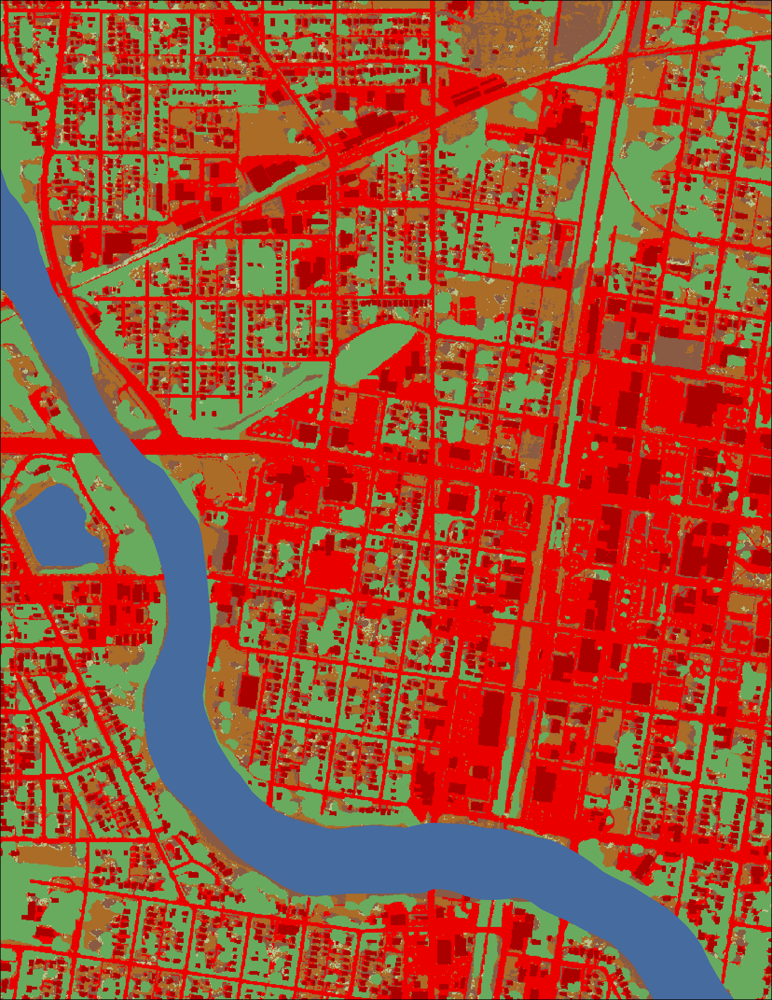
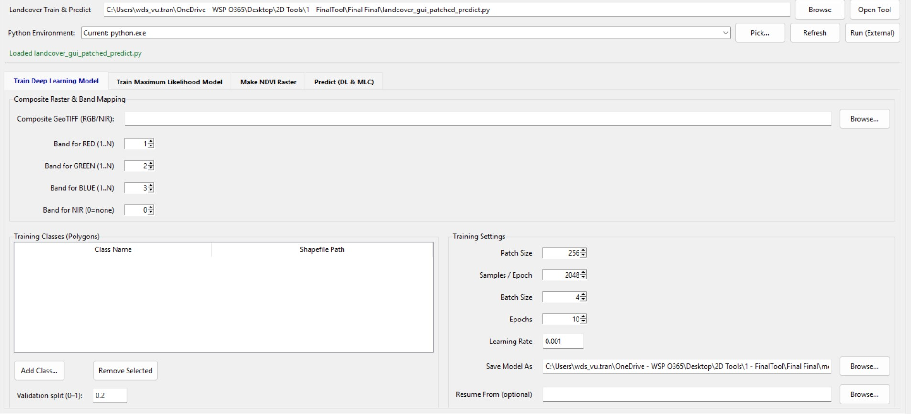
Developed an open-source Python application that enables users to train deep-learning and maximum-likelihood models for land-cover classification.
Automated NDVI raster generation and enabled trained models to be reused with similar datasets.
Generated impervious-surface and vegetation rasters using visible and infrared imagery.

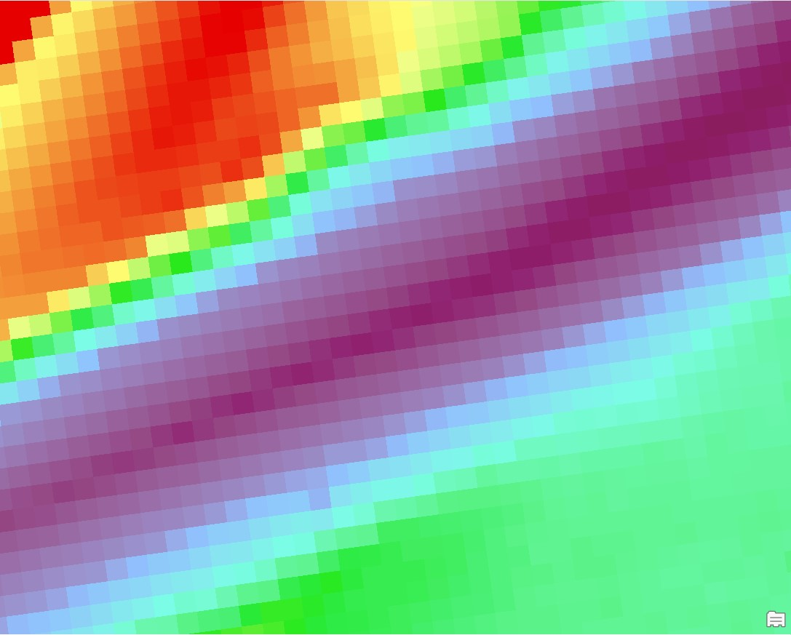
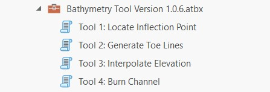
Developed four ArcPy script tools to automate channel-depth interpolation using hydro-flattened LiDAR elevation data.
Streamlined channel-depth modeling by replacing a manual spreadsheet workflow with an automated GIS process.
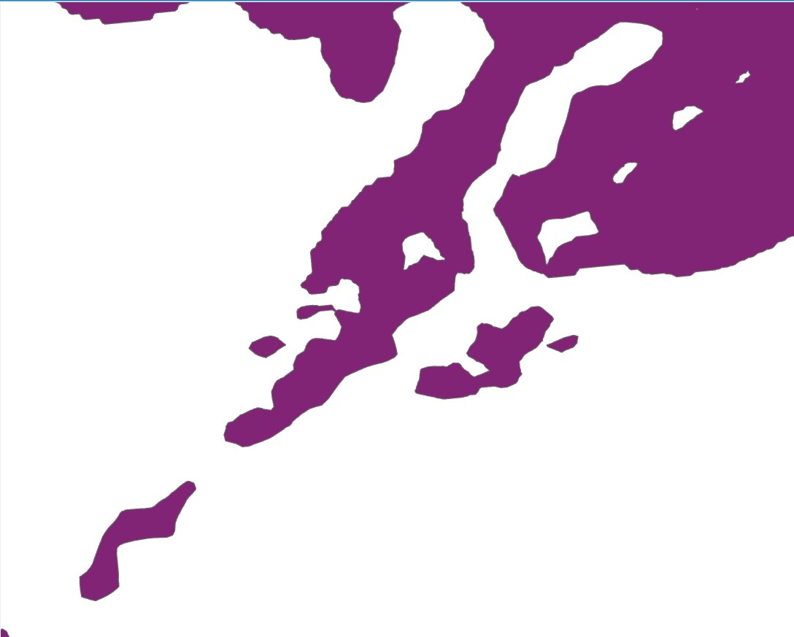
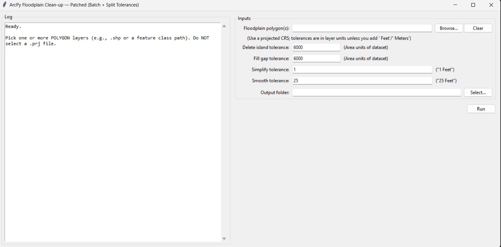
Developed an ArcPy tool with a Tkinter interface to smooth floodplain polygons, fill holes, and remove undersized islands.
Added batch processing to handle multiple polygons more efficiently.
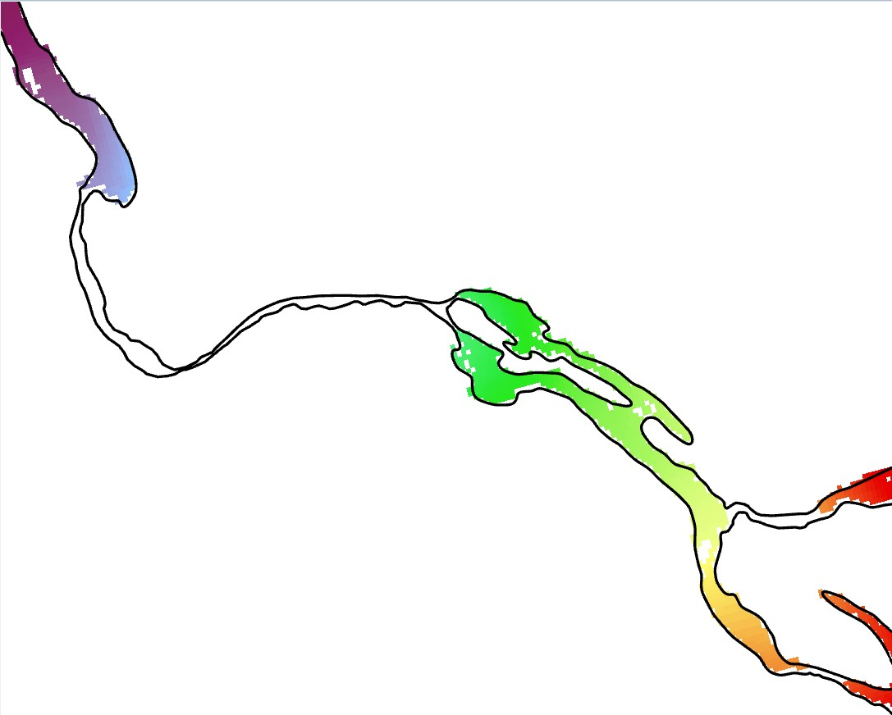
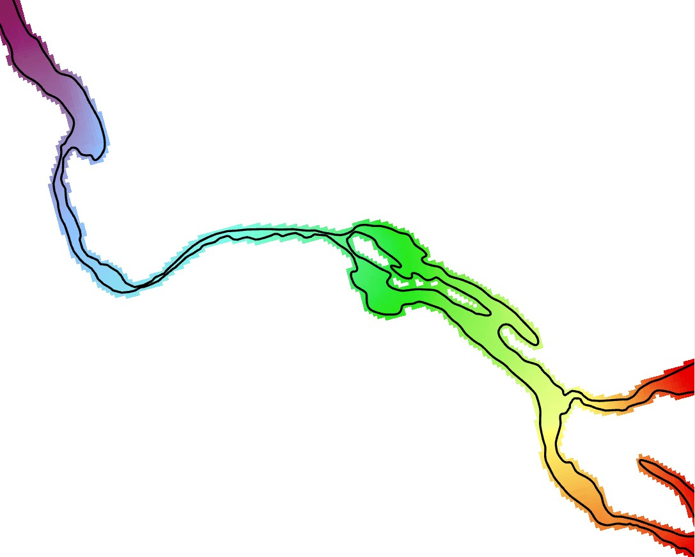
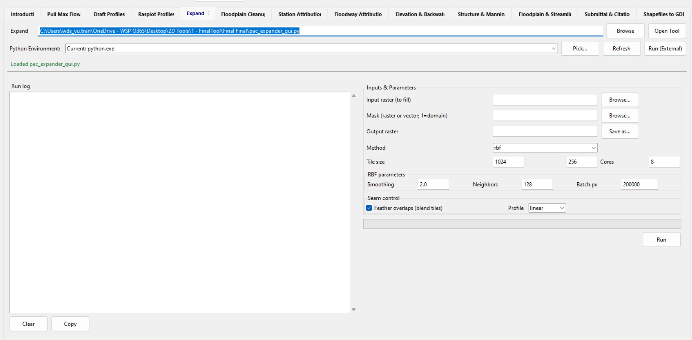
Developed an open-source Python tool with a Tkinter interface to fill raster gaps using an interpolation method.
Reduced processing time by up to 70% using parallel processing and chunk-based memory management.
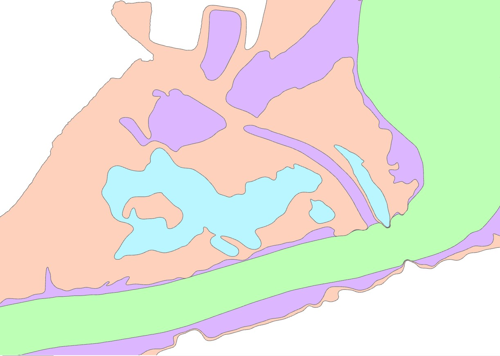
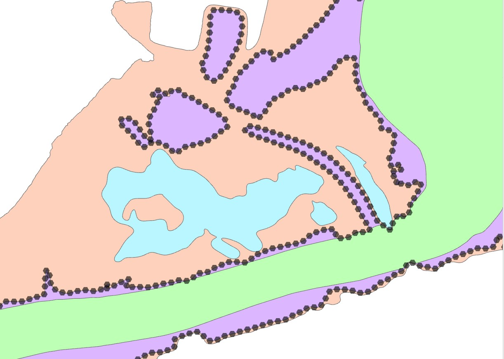
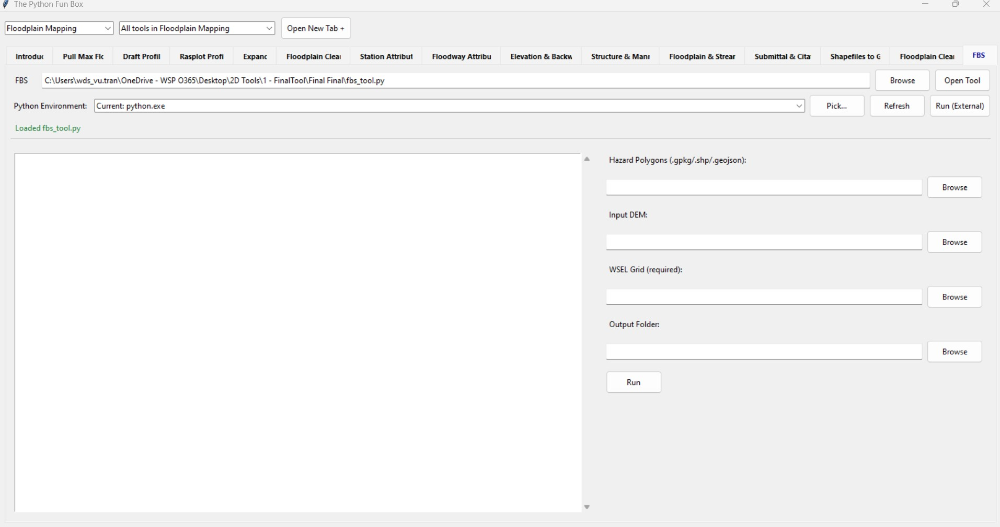
Developed an ArcGIS Pro toolbox that generates evaluation points to assess regulatory floodplain boundaries against FEMA standards.
Automated manual evaluation steps and enabled pass/fail reporting, making the workflow easier to repeat and teach to new users.
Web applications that make spatial information accessible to teams and stakeholders.
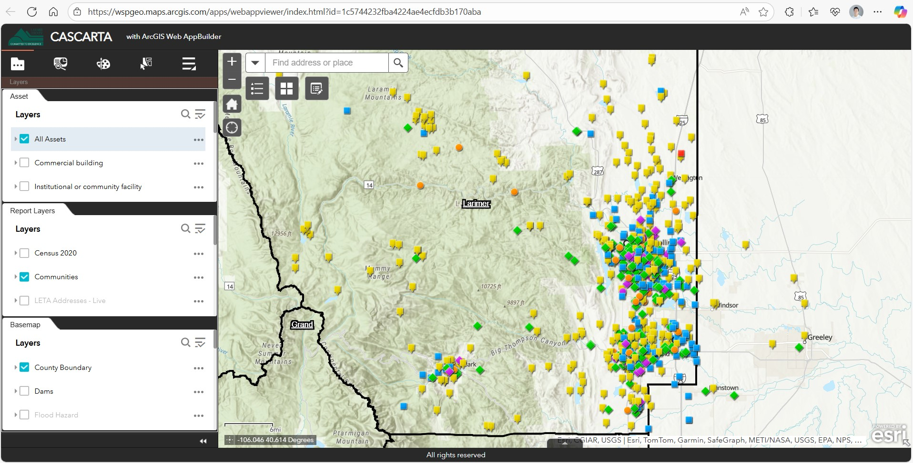
Developed an ArcGIS Online web application for Larimer County that lets users draw an area of interest and generate reports on intersecting assets, facilities, demographics, and roads.
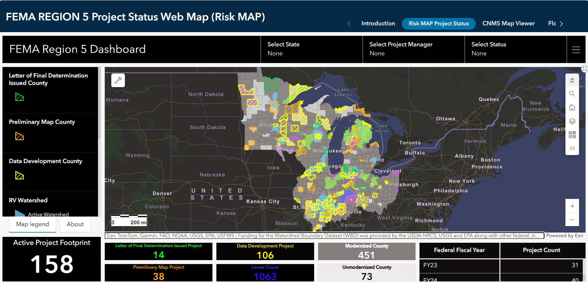
Created an ArcGIS Dashboard to track active and completed projects and embedded it in an Experience Builder application to support project management.
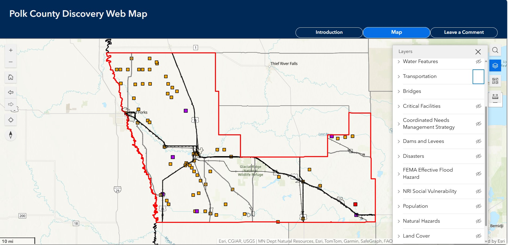
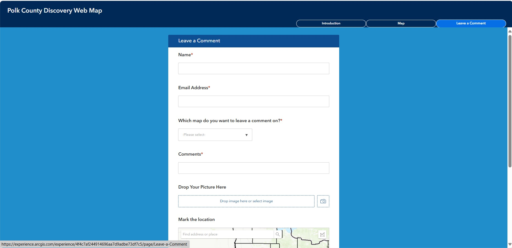
Built an ArcGIS Experience Builder application displaying county transportation, bridge, hydrology, and boundary data to support recommendations for new hydraulic studies.
Integrated a Survey123 form to collect community feedback.
No matching projects.
Older work in digitization, field data collection, cartography, GIS programming, and web mapping.